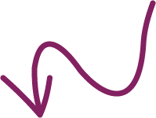
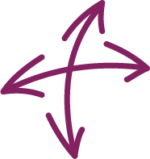
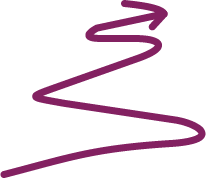

Over mij
Ik als IxD'er
Ik sta in mijn omgeving bekend als iemand die hard werkt om iets te behalen. Dit komt doordat ik perfectionistisch ben en nooit onafgerond werk laat liggen. Daarom zet ik mij altijd 100% in voor de taken die ik krijg. Het optimisme in mij zorgt ervoor dat ik ook tijdens zware tijden doorzet. Ik onderscheid mezelf als persoon ten opzichte van andere Interaction designers doordat ik creatieve oplossingen kan toepassen. Ik ben niet uitblinkend creatief in de zin van goed kunnen tekenen, maar juist in het bedenken van originele ideeën. Zo heb ik een nieuwe zicht op dingen. Daarnaast krijg ik altijd complimenten op mijn gestructureerde werkhouding, en dat zie je ook terug in het werk wat ik inlever. Het valt mensen op dat ik goed in samen werken ben. Tijdens samenwerkingen neem ik graag de leidende rol. Wanneer iemand in het team niet goed meewerkt probeer ik hem positief te motiveren in plaats van boos te worden. Op deze eigenschap krijg ik veel positieve reacties. Kortom, ik ben een leidend, georganiseerd, zelfstandig, veel eisend, ijverig en vooral een enthousiaste student die onwijs veel plezier heeft met het volgen van CMD.
Mijn doel
De allerleukste projecten die ik heb gehad, hebben allemaal één ding gemeen: Mensen helpen. Gebruiksvriendelijkheid is in mijn ogen het aller belangrijkste wat er is. Zo vind ik het onwijs interessant om concepten te bedenken voor speciale doelgroepen. Denk aan doven, blinden en verstandelijk beperkten. Want de doorsnee mens vind zijn weg wel, met of zonder apps. Maar deze doelgroep kunnen de bestaande apps helaas niet gebruiken. Het is mijn doel om later wat te gaan betekenen voor hen.
Hobby's
Naast het volgen van mijn geliefde opleiding heb ik nog meer hobby's en ben ik erg slecht in stilzitten. Het liefst ben ik altijd bezig en wanneer ik niets te doen heb zorg ik wel dat ik wat leuks ga doen. Zo breng ik de grootste tijd door bij familie, vrienden of ben ik op het hockeyveld te vinden. Nu ik een blessure heb ben ik een trouwe supporter van mijn team. Daarnaast werk ik met heel veel plezier bij de bakker als verkoop medewerker, hier snijd ik dagelijks honderden broden aan voor de mensen uit mijn dorp.
Kenmerken
Ik ben net een camera. Het kan inzoomen, focussen, "It captures the good times" en als het niet lukt: just take another shot. Bekijk de kenmerken die bij dit metafoor horen.
 Prioriteiten stellen Focussen
 Gevoel voor details Inzoomen
 Goede ideen Captures the good times
Doorzetter Als het niet lukt, just take another shot!